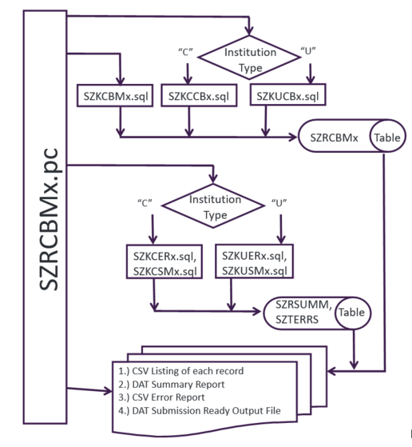

Technical Overview
Triggers
SGBSTDN
TCC delivered triggers attached to the SGBSTDN table can create records viewable on SZASSTD and SZASDLM and a TSI Hold viewable through SOAHOLD.
The trigger processing will create records for a student who is new to the institution and who matches the Level defined by the GTVSDAX rule STUDENTLVL. Additional processing is provided based on the rules defined on the SZASSTD Rules page (SZASSRL).
One set of triggers fire before a record inserting, updating, or deleting an SGBSTDN record while the second set of triggers fire after a record is inserted, updated, or deleted in SGBSTDN.
The following triggers fire before or after an SGBSTDN record insert, update, or delete:
|
|
SSBSECT
The following TCC delivered triggers are applied to the SSBSECT table which, when a record is inserted into SSBSECT, will create a record in the SZRSXRF table which is viewable from the SZASXRF form.
The record is created in SZRSXRF if defaults exist in the SZRCXRF table and are viewable on the SZACXRF form. When a record is inserted into SSBSECT, the trigger will also create a record in the SZRRTSP table which is viewable from the SZATPRQ form. The record is created in SZRRTSP if defaults exist in the SZRCPRQ table and are viewable on the SZACPRQ form. These triggers also delete records from SZRSXRF and SZRRTSP when a record is deleted from SSBSECT.
Following are the TCC delivered objects:
-
st_ssbsect_tcc_1_adiur -
st_ssbsect_tcc_1_adir
SZRTXSI
A TCC delivered trigger is applied to the SZRTXSI table which will create a Hold record in SPRHOLD when the SZRTXSI table is added, updated, or deleted.
This record is added only if a TSI Hold record does not already exist.
Following is the TCC delivered object: st_szrtxsi_tcc_adiur.
SARADAP
A TCC delivered trigger is applied to the baseline SARADAP table which will delete records from TCC tables (SZRCARI, SZACARS, SZACASI) when a corresponding parent record is deleted from SARADAP.
Following is the TCC delivered object: st_saradap_tcc_adr.
SARADAP processing notes
The SARADAP trigger is called and will remove child records from the TCC tables (SZRCARI, SZRCARS and SZRCASI) when the following processes are performed or run.
- SAAADMS:
When a record is deleted through the SAAADMS Record Remove option.
- SAPADMS:
When records are deleted through the Admissions Purge (SAPADMS) process.
Baseline Options menus
CBM reports
Each time a TCC CBM report process is run from TCC Student the data extracted to the state submission ready data file is also stored in a database table.
This data may be used as an historical archive of the data reported to the state and may be used for institutional reporting purposes. Following is information regarding those tables that may be helpful from a technical perspective.
Process flow
The wildcard (%) character in the following explanatory text can be substituted by any one of the following characters:
1, 2, 3, 4, 5, 6, 8, 9, A, B, C, E, E1, M, N, S, T or X
Exception: The SZRCBE1 process is named using the last 2 characters of the process name.
- The SZRCBM%.pc procedure is run from TCC Student job submission.
- The Reporting Institution Type parameter determines the *.sql procedure that is called.
- If the Reporting Institution Type parameter is equal to C then the SZKCCB% process is called. This procedure processes data as needed for Texas Community, Technical, and State Colleges.
- If the Reporting Institution Type parameter is equal to U, then the SZKUCB% process is called. This procedure processes data as needed for Texas Public Universities.
- If a Reporting Institution Type parameter is not used then the SZKCBM% process is called.
- A table named SZRCBM% is used to store the data extracted for the CBM00% report which is processed by the SZRCBM% job submission process.
Member institutions with TCC modifications installed before TCC Student 7.x may include tables named MSPCBM%. These tables were previously used to store data extracted for the CBM00% reports and are no longer in use. For example, table MSPCBM1 is no longer used for storing the CBM0C1 data as the data is now stored in the SZRCBM1 table.
- A table named SZRSUMM contains the Summary Report data extracted for each report (filename_sum.dat).
- A table named SZTERRS contains the Error Report (filename_err.csv) data extracted for each report (filename_err.csv).
- Each report delivers the extracted data in the state required text format in a DAT file.
- Each report delivers the extracted data in a comma delimited file with a file type of CSV. Be aware that if any individual data item, such as Last Name or Course Title, is included in the report and contains a comma, the data items for that record will move one spreadsheet cell to the right if the comma delimited file is opened in a spreadsheet. Extra commas will cause the data in that data item to separate into two separate spreadsheet cells, which causes any remaining data items in that individual record to move one data item (or cell) to the right.
The CBM reporting tables are as follows:
| Database Table | Used by CBM Reporting Process | Description |
|---|---|---|
| SZRCBE1 | SZRCBE1 | CBM0E1 report table |
| SZRCBM1 | SZRCBM1 | CBM001 report table |
| SZRCBM2 | SZRCBM2 | CBM002 report table |
| SZRCBM3 | SZRCBM3 | CBM003 report table |
| SZRCBM5 | SZRCBM5 | CBM005 report table |
| SZRCBM8 | SZRCBM8 | CBM008 report table |
| SZRCBM9 | SZRCBM9 | CBM009 report table |
| SZRCBMA | SZRCBMA | CBM00A report table |
| SZRCBMB | SZRCBMB | CBM00B report table |
| SZRCBMC | SZRCBMC | CBM00C report table |
| SZRCBME | SZRCBME | CBM00E report table |
| SZRCBMM | SZRCBMM | CBM00M report table |
| SZRCBMN | SZRCBMN | CBM00N report table |
| SZRCBMS | SZRCBMS | CBM00S report table |
| SZRCBMX | SZRCBMX | CBM00X report table |
| SZRHEVH | SZRHEVH | Hazlewood report table |
Security
Each table in the database requires security assigned which will allow staff to add, read, modify, and delete records from the table. Following are the new tables:
| Database Tables with Security Assigned | |
|---|---|
| SZRCBE1 | SZRCBMA (Community College only) |
| SZRCBM1 | SZRCBMB (University only) |
| SZRCBM2 | SZRCBMC (Community College only) |
| SZRCBM3 (University only) | SZRCBME (University only) |
| SZRCBM4 | SZRCBMM (Community College only) |
| SZRCBM5 | SZRCBMN |
| SZRCBM8 | SZRCBMS |
| SZRCBM9 | SZRCBMX (University only) SZRHEVH |
Possible performance issue
As time goes on, the amount of data stored in the TCC Student CBM report tables (SZRCBM%) will increase. Concerns regarding this increasing number of records include a possible decrease in performance by the CBM reporting processes. This possible performance issue may cause an increase in the amount of processing time the CBM reporting processes need to complete the data extraction of CBM report data.
The Texas Connection Support Center has been made aware that some member institutions use the archived data in the CBM report tables for institutional reporting purposes. Thus, it has become the responsibility of each member institution to determine if or when the archived data records are no longer needed and may be deleted from the CBM report tables to ensure no negative impact on the reporting processes.
Technical overview of SZRCBM%.PC
The following figure provides a technical overview of SZRCBM%.PC.

Self-Service 8.x configuration
The Self-Service procedures delivered allow a student to display their TSI Status, Drop Limit counts, and Core Curriculum completion status through Self-Service TCC Student.
This functionality is optional, however if chosen, requires configuration through WebTailor Administration of the two delivered procedures. Only one new menu item needs to be configured.
Following are the TCC delivered package names:
| Package Name | Description |
|---|---|
bzskgstu.P_TxInfo
|
A procedure that allows display of Texas specific data such as TSI status, state drop limit counts, and core curriculum completion status. Needs to be configured as a Web Procedure. Needs to be attached to a menu as a menu item. |
bzskgstu.P_SelectTerm
|
A procedure which is called by the above bzskgstu.P_TxInfo package.Requires the student to choose a Term to allow determination of the student level. The student level is then used by the Needs to be configured as a Web Procedure. Does not need to be attached to a menu item. |
bzskgstu.P_TxInfo
The following instructions are intended as a Getting Started guide. Please consult baseline Self-Service and WebTailor Administration resources for additional information.
Procedure
bzskgstu.P_SelectTerm
The following instructions are intended as a Getting Started guide. Please consult baseline Self-Service and WebTailor Administration resources for additional information.